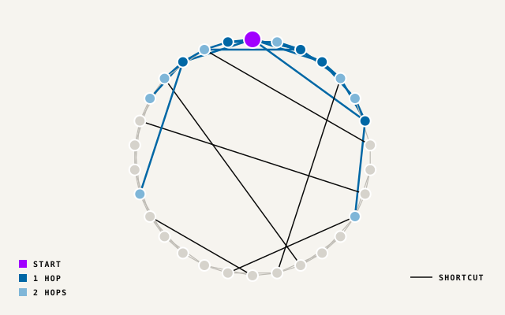

Experiment · Little Bunnies
Two hops reach most context.
An agent rarely needs the whole lineage graph. Two hops around the changed object hold most of the context.

- Business question
- How much lineage must an agent load to act safely?
- What this shows
- Long shortcuts make reach grow fast with each hop.
- Graph contribution
- Hop distance gives a natural, explainable limit.
- System 1 control
- Two hops fill about 70% of a fixed state budget.
Try it
Watch reach grow.
Pick a hop depth. See how much of a 500-node graph one node reaches.
Hop depth
2 hops reach 373 of 500 nodes, 75% of the graph.
- 1 hop 47 nodes, 9%. Neighbours only. Often too little.
- 2 hops 373 nodes, 75%. Most of the graph, about 22,380 tokens: roughly 70% of a 32,000-token budget (vendor-documented state limit).
- 3 hops 499 nodes, 100%. Effectively everything. No filtering.
Average path length: 2.06 hops, hence the jump from one to two. Results apply to this sample; other graphs need their own measurement.
Methodology
How we got these numbers.
Model and parametersSynthetic graph, not a real catalogue.
- Model
- Watts–Strogatz small-world ring
- Nodes (N)
- 500
- Neighbours (K)
- 25 each side (NetworkX k=50, counting both directions)
- Rewiring probability
- 0.15 (1,912 edges rewired)
- Random seed
- 1
- Average path length
- 2.06 hops
- Token estimate
- Two hops: 22,380 tokens, about 70% of a 32,000-token state budget
- Budget source
- Jev, TypeSafe's System 1 decision model: 32k tokens for state plus the longest question, 64k per request (TypeSafe Models documentation, vendor-reported)
Top illustration: a 30-node ring, for legibility. Reach figures use 500 nodes.